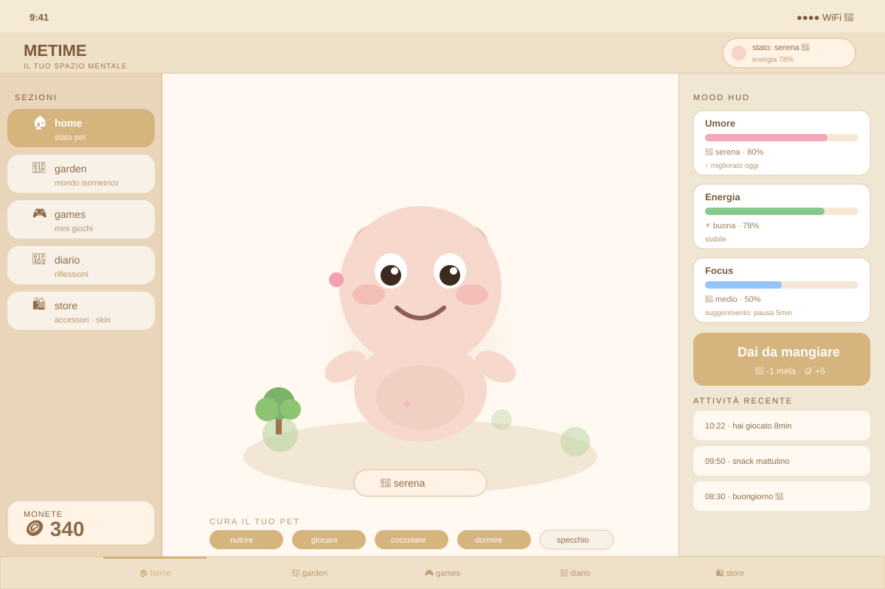

iOS 17+ wellness app con SwiftUI, SpriteKit e SwiftData. Un virtual pet kawaii rispecchia il benessere dell'utente attraverso stati emotivi, un mondo isometrico animato, audio ambientale e gestione sicura dei dati.

METIME nasce dall'idea che il benessere quotidiano sia più facile da tracciare quando c'è qualcosa di vivo che risponde. Il virtual pet non è solo un gioco — cambia espressione, postura e umore in base ai dati inseriti dall'utente: ore di sonno, energia, stato emotivo del giorno.
La sfida principale era integrare SpriteKit (motore di gioco 2D) all'interno di un'app SwiftUI moderna, mantenendo un'architettura MVVM pulita e la persistenza locale con SwiftData — senza cloud, per rispettare la privacy dell'utente.
Il cuore dell'app è una state machine per gli stati emotivi del pet. Ogni transizione è deterministica — nessuna randomicità — così l'utente può imparare a prevedere il comportamento del pet migliorando le proprie routine.
enum PetMood: String, Codable, CaseIterable {
case happy, neutral, sad, excited, tired
// Transizione di stato in base all'input dell'utente
func next(energy: Int, sleep: Int) -> PetMood {
let score = energy + sleep // 0–20
switch score {
case 15...: return .excited
case 10...: return .happy
case 6...: return .neutral
case 3...: return .tired
default: return .sad
}
}
var spriteName: String { "pet_\(rawValue)" }
var ambientTrack: String {
switch self {
case .excited: return "upbeat"
case .happy: return "calm"
case .tired: return "soft"
default: return "ambient"
}
}
}SpriteKit viene embeddato in SwiftUI tramite UIViewRepresentable. Il bridge è sottile: SwiftUI passa solo il mood corrente, la scena SpriteKit gestisce autonomamente le animazioni.
struct PetSceneView: UIViewRepresentable {
let mood: PetMood
func makeUIView(context: Context) -> SKView {
let view = SKView()
view.ignoresSiblingOrder = true
let scene = PetScene(size: view.bounds.size)
scene.scaleMode = .resizeFill
view.presentScene(scene)
return view
}
// Aggiorna la scena ogni volta che SwiftUI ridisegna
func updateUIView(_ uiView: SKView, context: Context) {
guard let scene = uiView.scene as? PetScene else { return }
scene.transition(to: mood) // animazione interna SpriteKit
}
}
// In PetScene.swift
func transition(to newMood: PetMood) {
guard newMood != currentMood else { return }
currentMood = newMood
let fadeOut = SKAction.fadeOut(withDuration: 0.2)
let swap = SKAction.run { [weak self] in
self?.petSprite.texture = SKTexture(imageNamed: newMood.spriteName)
}
let fadeIn = SKAction.fadeIn(withDuration: 0.3)
petSprite.run(.sequence([fadeOut, swap, fadeIn]))
}I dati vengono persistiti con SwiftData. Il modello è minimo — solo i dati necessari per calcolare il mood e mantenere la streak.
@Model
class MoodEntry {
var date: Date
var energy: Int // 1–10
var sleep: Int // 1–10
var note: String
// Mood calcolato, non persistito — derivato sempre dai dati raw
var computedMood: PetMood {
PetMood.neutral.next(energy: energy, sleep: sleep)
}
init(energy: Int, sleep: Int, note: String = "") {
self.date = .now
self.energy = energy
self.sleep = sleep
self.note = note
}
}
// In HomeView.swift
@Query(sort: \MoodEntry.date, order: .reverse)
private var entries: [MoodEntry]